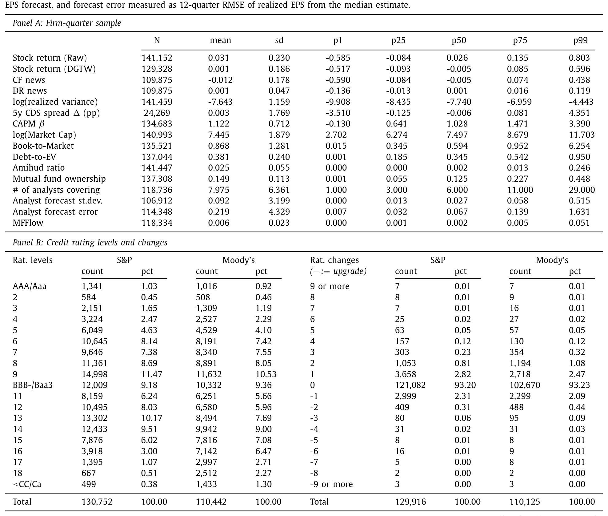
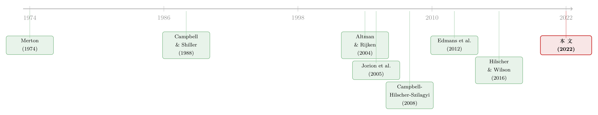

当价格在说谎：评级机构凭什么「看穿」市场的噪声
本文读的是 Gredil, Kapadia & Lee (2022, Journal of Financial Economics)：在预测违约这件事上，一年以内的短期，市场化度量（CDS、结构与约简模型的违约概率）确实比信用评级更准；但把视野拉长，评级不仅不输，而且始终携带着市场化度量「看不到」的增量信息。差别的根源在于——市场价格同时被现金流消息和贴现率消息推动，而评级几乎只对现金流消息做反应，恰恰是后者才真正预示违约。于是，评级机构在共同基金「火线抛售」这种纯噪声冲击面前能按兵不动，市场化度量却被骗得团团转。
1 一个「被围攻」的行业
先讲一个时代背景。
过去二十年里，信用评级机构（credit rating agencies, CRAs）几乎成了金融学里的「反派标配」。一大批文献指出，「发行人付费」（issuer-pays）的商业模式加上竞争压力，扭曲了评级机构出具公允评级的激励（Griffin et al., 2013；Becker and Milbourn, 2011）；监管者把次贷危机的部分账，直接记到了被「灌水」的评级头上；2010 年的《多德-弗兰克法案》（Dodd-Frank Act）更是要求所有监管规则删除对评级的引用，从制度上削藩。与此同时，学术界还递上了一把更锋利的刀：把股票信息（Hilscher and Wilson, 2016）或信用违约互换（credit default swap, CDS）市场信息（Chava et al., 2016）纳入的违约概率估计，比评级更准、更及时。Flannery et al. (2010) 干脆主张，无论是监管者还是私人投资者，都应该用市场化的信用风险度量去取代信用评级。
于是一个很自然、也很尖锐的问题浮上来：当市场化度量唾手可得时，信用评级是不是一种多余的、滞后的信息？
评级机构当然不服。穆迪的 Cantor and Mann (2006) 反驳说，市场参与者其实「不希望评级只是简单地跟踪市场」，他们想要的是反映「持久性」（enduring）信用变化的评级，而不是被市场情绪牵着鼻子走的噪声。换句话说，评级方声称：市场价格里掺了太多「杂质」，评级的价值恰恰在于把杂质滤掉。
这就是本文要审判的两个对立断言：评级到底冗不冗余？如果不冗余，它和市场化度量的差别究竟在哪？
2 第一回合：一场跟「期限」有关的赛马
本文比较了三种市场化度量：Campbell, Hilscher and Szilagyi (2008，下称 CHS) 的约简式违约模型、Duan et al. (2012，下称 DSW) 把 Merton (1974) 结构模型的违约概率与会计变量结合的模型，以及来自 Markit 的 CDS 利差。被预测的对象是未来不同期限上的真实违约。
CHS 与 DSW 都是「违约概率」（default probability, DP）模型；它们各自给出 1 年、3 年、5 年期的违约概率估计。本文把这些估计当成解释变量，去预测真正发生的违约。
首先，作者做了一场最朴素的单变量「赛马」（horse-race），结果出人意料地清楚：胜负取决于期限。
在 3 个月这种极短的窗口里，市场化度量大获全胜——1 年期 DSW 违约概率预测违约的 R² = 29.5%，而标普评级只有 R² = 22.7%。这与「市场更及时」的直觉完全吻合。但把窗口拉到 3 年，局势彻底反转：评级的 R² = 9.4%，反超 1 年期 DSW 度量的 4.0%。也就是说，评级的相对表现随着期限拉长而单调改善。
这恰好印证了 Campbell et al. (2008) 那个著名的比喻：在极短期预测违约，就像诊断一个「捂着胸口倒在地上」的人是不是心脏病发作——这时候你当然要看最实时的体征（市场价格）。而评级的用处，更像是衡量心脏病的长期标志物，而非那一刻的急诊判断。
接着，一个自然的问题是：评级在长期不输，是不是只是因为它「稳」？评级的季度自相关高达 0.99 以上（标普 0.998、穆迪 0.999），这种近乎不动的平滑性，天然就站在了长期预测这一边。本文也确认：市场化度量只要用移动平均之类的机械规则「人为做稳」，就能造出一个「市场隐含评级」（market implied rating），它在不牺牲短期预测力的前提下改善了长期表现。
那评级岂不是真的可以被一个「平滑过的市场度量」替代？
3 真正关键的一步：赛马回答不了「冗余」
但真正关键的一步在于——冗余与否，本质是一个多变量问题，单变量赛马根本回答不了。一个度量在赛马里输了，不代表它没有别人不具备的增量信息。
于是作者转向双变量回归。这里有一个统计上的陷阱：评级的水平值自相关超过 0.99，几乎是单位根，直接拿水平值回归会出问题。所以本文聚焦于变化量（changes）而非水平值，既规避了持续性带来的伪回归，又能干净地隔离「新信息」。
结论很硬：在控制了 CHS、DSW 的短期与长期违约预测、它们的滞后项、以及由短期市场度量构造的隐含评级之后，评级的变化仍然能预测未来 4 到 5 年的违约。这说明评级里存在一块与所有市场度量正交、却与未来违约相关的信息。
这个结果之所以「惊人」，是因为评级和市场度量都是公开信息。两个都公开的信号，本不该相互正交。这逼出了全文的核心追问：评级到底从哪里多挖出了一块信息？
4 把收益拆成两半：现金流消息 vs 贴现率消息
然后，作者亮出了第一把手术刀：把股票收益分解成现金流消息与贴现率消息。这一步几乎是全文的「机理之眼」，值得把它的来龙去脉讲清楚。
这套分解可以追溯到 Campbell and Shiller (1988) 的对数线性化与 Campbell (1991) 的收益方差分解：一个资产「没被预期到」的收益，必然来自两种预期修正——要么是对未来现金流的预期变了，要么是对未来折现率的预期变了。写成本文（沿用 Campbell et al., 2010 的公司层面版本）使用的恒等式：
$$ r_{t+1} - E_t\!\left[r_{t+1}\right] \;=\; N_{CF,\,t+1} \;-\; N_{DR,\,t+1} $$
其中两块消息分别定义为对未来现金流增长与未来收益的预期修正之和：
$$ N_{CF,\,t+1} \;=\; \left(E_{t+1}-E_t\right)\sum_{j=0}^{\infty}\rho^{\,j}\,\Delta d_{t+1+j}, \qquad N_{DR,\,t+1} \;=\; \left(E_{t+1}-E_t\right)\sum_{j=1}^{\infty}\rho^{\,j}\,r_{t+1+j} $$
这里 \(\rho\) 是 Campbell-Shiller 线性化常数（略小于 1），\(\Delta d\) 是现金流（红利）增长，\(E_{t+1}-E_t\) 表示「从 \(t\) 到 \(t{+}1\) 这一期里预期被修正了多少」。实际操作上，本文用一个向量自回归（VAR）来估计这两块消息。对这个核心恒等式做逐项的解读：
直觉上这一步为什么重要？因为它把价格波动一分为二：\(N_{CF}\) 是关于「公司会不会垮」的消息，\(N_{DR}\) 则是关于「市场愿意为它付多少」的消息。如果评级方「市场度量太吵」的指控成立，那市场度量就应该比评级更多地被 \(N_{DR}\) 这块「噪声」推动。
于是反转出现：数据完全站在评级方一边。评级与市场度量都和现金流消息相关（这没问题，基本面恶化谁都该反应）；但市场度量与贴现率消息的相关性，显著高于评级。对全样本而言，评级下调（downgrade）与现金流消息强相关，与贴现率消息只有不显著的相关。更关键的最后一锤：作者证明，只有现金流消息稳健地预测违约，贴现率消息不预测违约。
把这两件事拼起来，逻辑就闭合了：市场度量同时吸收了 \(N_{CF}\) 和 \(N_{DR}\)，而 \(N_{DR}\) 对违约没有预测力——它是噪声；评级几乎只对 \(N_{CF}\) 反应，相当于天然把噪声滤掉了。这就是为什么评级能携带一块与市场度量正交、却预测违约的信息。
横截面与时序上也对得上：评级对投机级（speculative grade）公司、以及扩张期最有用——这些正是市场价格里「与违约无关的波动」最多、而真正违约消息相对稀薄的场景。反过来，贴现率消息在衰退期、对投资级公司相对更重要，这也解释了为何在这些场景里市场度量的优势更明显。
5 决定性的一击：共同基金的「火线抛售」
到这里，逻辑已经很完整，但还差一个「实时性」的证据。评级要真正比市场度量有价值，它必须能在冲击发生的当下就判断这是暂时性还是永久性的，而不是事后等价格反转再说。怎么造一个「我们知道是暂时性、但市场当时不知道」的纯噪声冲击？
这正是全文最漂亮的一步。 作者借用了 Edmans et al. (2012，下称 EGJ) 的共同基金「火线抛售」（fire sales）设定。当大量资金从某些共同基金流出、迫使它们被动抛售持仓股票时，会对股价造成一个有意义但会在几个季度内反转的冲击。识别假设非常干净：火线抛售带来的是对感知信用质量的暂时性冲击——市场股权下跌、于是市场化的信用质量估计随之恶化，但未来真实违约并不会增加。作为反事实，本文还要求：一个同样幅度、但不伴随火线抛售的收益冲击，对应的是永久性的信用恶化、未来违约更多。作者在数据里证实了这两个前提。
关键变量 MFFlow 即 EGJ 的火线抛售压力，它用基金的持仓权重隐含的被迫卖出来构造，而非实际卖出量——这正是为了规避内生性。样本里 MFFlow 均值约 0.006。
结果令人信服。在给定当季收益的条件下，火线抛售压力从第 25 百分位升到第 75 百分位，评级下调率下降约 2%，而样本平均下调率仅 4.7%——也就是说，评级机构对这种纯流动性冲击几乎按兵不动。可与此同时，CDS 利差、CHS 和 DSW 的违约概率却照样上升（就和它们对任何相似负收益的反应一样）。即便表现最好的那个市场化度量，相对评级也只能「看穿」这个冲击的 15%。
换句话说：在「同样跌了一截，但一种是火线抛售、另一种是基本面恶化」的两类冲击之间，评级机构能分辨，市场度量基本不能。

Table 1
这里还有一个对识别的精彩防守。有人会担心火线抛售并非外生（Berger, 2017 的选择偏差），也有人（Wardlaw, 2020）质疑这种流量冲击其实是永久性而非暂时性的。但作者指出：如果 Wardlaw 的批评成立、火线抛售真是永久性收益冲击，那本文的结果就应该是反方向的——火线抛售会伴随更多下调和更多违约。而数据恰恰相反：火线抛售伴随更少的下调，并在控制收益后预测更少的真实违约。批评反而成了支持。
6 评级机构凭什么能看穿？——信息优势与「信用观察」
接着，一个更深的问题是：评级机构是怎么做到的？
一个假说是：它们手里有市场没有的私有信息。评级机构能拿到预算、预测、单体财务报表、内部资本配置、或有风险分析、以及关于新融资/并购/重组的非公开信息。看到价格异动后，它们会去核实「基本面到底有没有恶化」——正如标普的 Adelson (2008) 所言，股价的突然变化「有时确实预示着公司基本面或前景的剧变」，于是「我们会去探究其背后的原因」。如果靠私有信息分辨出暂时性冲击，这并不违反弱式或半强式有效市场。
本文给了两组证据支持「信息优势」假说：
其一，这种「看穿」能力在公司公开信息环境越不确定时越强——用卖方分析师预测的横截面离散度、以及其中位数预测误差的时序标准差来度量。这说明评级机构与股票分析师是互补的：在分析师预测越不精确的地方，评级越增值。（关于价格反过来「教」分析师做预测这件事，可参见《价格会「教」分析师做预测吗？》。）
其二，沿用 Jorion et al. (2005) 的思路，本文用「公平披露规则」（Regulation Fair Disclosure, Reg FD）的实施作为评级机构相对信息优势的外生冲击。Reg FD 禁止上市公司向投资者选择性披露重大信息，却为向评级机构的披露开了豁免口子。结果：Reg FD 之后，下调率的差异变大，与「评级机构看穿暂时性冲击的能力来自其信息优势」一致。
然后还有一个反转：会不会评级机构根本就不看股市，所以才对暂时性股价冲击无动于衷？为检验这点，作者找了两个评级机构「理应更关注市场价格」的场景：穆迪收购了市场化估计提供商 KMV 之后，以及穆迪评级高于标普的公司。在这两种场景里，评级机构确实会对市场价格做出反应——但走的是信用观察（credit watch）而非直接下调这条路。而且，当一家公司因为更大的火线抛售压力被列入信用观察后，评级机构更可能维持原评级、从而撤销一个很可能是误判的观察。这说明评级机构不是「没看见」，而是「看见了，但选择用观察去缓冲」。
于是全文的核心贡献清晰浮现：评级机构在信用风险的传导链条里扮演了一个「断路器」（circuit-breaker）——把金融市场的噪声从真实经济中过滤掉。这也带来一个政策上的反讽：Dodd-Frank 出于「鼓励投资者独立分析」的良好初衷去限制评级机构的特权，却可能切断它们获取私有信息的渠道，反而让暂时性的市场噪声更容易传染到实体经济。
7 文献脉络
把这条线索摆开来看，本文站的位置就很清楚了。
最早的源头是结构化信用风险的起点——Merton (1974) 用期权思想给公司债定价，奠定了「用市场信息推断违约」的整套范式；约简式与简易危险率模型（Shumway, 2001；CHS, 2008）则把违约预测推向了可操作的实证前沿，DSW（Duan et al., 2012）进一步把结构与会计信息融合。
与之并行的，是一支关于「评级稳定性 vs 准确性」权衡的文献：Altman and Rijken (2004, 2006) 解剖了评级机构如何「跨周期」地维持稳定，Löffler (2013)、Cornaggia and Cornaggia (2013) 继续追问稳定的代价。再往后，一批论文把矛头指向「市场度量更优」：Flannery et al. (2010) 主张用 CDS 替代评级，Hilscher and Wilson (2016) 发现评级反映的是系统性信用风险暴露，Chava et al. (2016) 强调市场信息的及时性。

方法上，本文嫁接了 Campbell and Shiller (1988)、Campbell (1991) 到 Campbell, Polk and Vuolteenaho (2010) 的收益分解传统，又借了 Edmans et al. (2012) 的火线抛售作为外生噪声、Jorion et al. (2005) 的 Reg FD 作为信息优势冲击。和它最近的「邻居」是 Cho and Choi (2015)——后者也发现评级对现金流消息的反应强于贴现率消息，但没有与市场化度量正面对照，而这恰是本文的主战场。最终，本文把自己安放在「金融市场的真实效应」这一更大的图景里（Bond et al., 2012；Manso, 2013）：评级政策也许正是为了缓冲市场噪声对实体的负面冲击而演化出来的。（关于「决策者从价格里学习」这条线，可参见《从马嘴里掏答案：直接问 4641 家公司，它们到底有没有在「看价格做决策」》。）
8 数据
- 样本：1990–2016 年，公司-季度频率。涵盖所有在季末持有标普或穆迪长期发行人信用评级、且 CRSP 股票代码为 10/11/12 的公司。
- 来源：会计数据来自
Compustat，收益来自CRSP，评级与违约信息来自标普与穆迪，CDS 来自Markit，分析师数据来自I/B/E/S，共同基金持仓来自Thomson Reuters。 - 规模：股票季度收益约
141,152个观测；标普评级水平130,752条、穆迪110,442条。CF news/DR news各约109,875条，MFFlow约118,334条。 - 关键变量：标普评级均值
10.00（SD3.57，季度自相关0.998），穆迪10.57（SD3.94，自相关0.999）；评级「不变」（0 级变化）的公司-季占比高达93%以上——这正是评级「黏性」的直接体现。
9 评论与延伸（Q&A + 研究方向）
(a) 几个可能的疑问
Q：短期市场度量更准，长期评级更准，会不会只是「评级慢、所以在长期看着像对了」的机械结果？
不是。如果只是「慢」，那评级在控制了市场度量及其滞后、以及『人为做稳』的市场隐含评级之后，就不该再有增量信息。但本文发现评级的变化在控制这一切后仍预测未来 4–5 年违约，说明它携带的是市场度量里根本没有的信息，而非简单的时间错位。
Q：现金流消息和贴现率消息的分解依赖一个 VAR，结论会不会被 VAR 设定绑架？
这是这类分解的老问题，本文也无法完全免疫。但它的核心结论不只靠分解——火线抛售设定提供了一个不依赖 VAR 的独立证据：那是一个事前就知道「与基本面无关」的纯噪声冲击，评级对它按兵不动、市场度量却被骗。三条互补证据（期限结构、消息分解、火线抛售）指向同一结论，比任何单一方法都稳。
Q：火线抛售真的是「暂时性」冲击吗？Wardlaw (2020) 不是说它其实是永久性的？
作者把这个批评变成了一次压力测试。若火线抛售真是永久性收益冲击，那它应伴随更多下调和更多违约——结果会是反方向。而数据里火线抛售伴随更少下调、并预测更少违约，恰好排除了这种解释。换句话说，即使你接受 Wardlaw 的担忧，本文的符号也对不上「永久冲击」的预测。
Q：评级靠私有信息「看穿」噪声，这会不会只是说明评级机构有特权，而非它真的更聪明？
本文并不否认评级机构存在利益冲突，也不声称评级比市场度量「更准」。它的主张更克制：评级提供了一块正交的增量信息，且这块信息的来源之一是私有信息——证据是它在公开信息越嘈杂（分析师分歧越大）、以及 Reg FD 给评级机构开豁免之后表现更强。「特权」与「有用」在这里并不矛盾，反而是同一枚硬币。
Q：既然能用移动平均把市场度量「做稳」来逼近评级，那评级是不是仍可被工程化地替代？
「做稳」能复制评级的长期预测力，却复制不了它在火线抛售那一刻实时分辨暂时与永久的能力——移动平均本质是事后平滑，它要等冲击反转才反应过来。本文证明即便最好的市场度量也只能看穿
15%的火线抛售冲击。实时性，是机械规则造不出来的。
Q：这对「该不该废除评级」的政策争论意味着什么？
本文给监管者泼了一盆冷水：限制评级机构获取私有信息（如 Dodd-Frank 的方向），可能削弱它们充当「断路器」、阻断市场噪声向实体经济传导的能力。良好的初衷（鼓励独立分析）可能带来意外后果（噪声更易传染）。
(b) 几个可能的研究问题与提案
1. 把同一套检验搬到公司债二级市场：评级 vs 债券利差。
【经济故事】本文的市场度量以股票/CDS 为主，但信用风险最直接的「市场价格」其实是公司债利差。债券利差里同样掺着流动性与贴现率噪声（尤其是危机期），评级是否也能在债券市场层面「看穿」这些噪声？这直接关系到「评级触发条款」嵌在债券合约里的真实成本。 【可行性】高。
TRACE提供成交价、Mergent FISD提供条款，结合本文的火线抛售/消息分解框架即可。难点是把债券流动性冲击（而非股票）干净地识别为暂时性。
2. 外资持有人的「火线抛售」是不是另一种纯噪声冲击？
【经济故事】外资机构因母国冲击（汇率、资本管制、母国赎回）被迫抛售美国公司债，构成一个与发行人基本面无关的需求冲击。评级机构会不会同样「看穿」这种外生抛压、而债券利差却被推高？若是，则评级在跨境噪声传导中也扮演断路器。 【可行性】中。需要
eMAXX/13F 类的持有人层面数据来构造外资被迫抛售压力，识别上要借鉴 EGJ 的「隐含抛售」而非实际成交。母国冲击的外生性是关键，也是最大难点。
3. 评级断路器与公司债流动性的交互。
【经济故事】如果评级在暂时性冲击下不下调，它就避免了「下调触发→被迫抛售→利差再升」的负反馈。那么在火线抛售冲击下，被评级「保护」的债券，其后续流动性恶化是否更轻？这把本文的信息含量故事直接接到流动性螺旋上。 【可行性】中。需要把评级行动、流动性度量（如 size-adapted 的成交-成交量分解，见《把「成交价」从「成交量」里解放出来》）与火线抛售压力对齐到债券-季度。识别上可用「踩在投资级/投机级边界」的债券做断点。
4. 信用观察（watch）作为独立信息事件的事件研究。
【经济故事】本文发现评级机构对市场价格的反应往往走「观察」而非「下调」。那么一次被火线抛售触发、随后被撤销的观察，其本身向市场释放了什么信号？观察的「狼来了」噪声，会不会反而恶化触发条款的执行？ 【可行性】高。观察的起止日期可得，事件研究框架成熟；难点是区分「被噪声触发的观察」与「真有基本面恶化的观察」，这正可复用本文的火线抛售工具。
5. KMV 收购作为「评级开始看市场」的准自然实验，做更细的横截面。
【经济故事】本文用穆迪收购 KMV 后的行为变化做了识别。能否进一步看：哪些类型公司（信息环境差的、投机级的、外资持有多的）在收购后评级行为变化最大？这能直接量化「评级机构看市场」的边际价值落在谁身上。 【可行性】中。事件时点明确，但要小心同期其他制度变化（如 Reg FD、危机）的混淆，需要 DiD 配合细致的平行趋势检验。
10 我的判断
这篇论文最让我佩服的，是它把一个看似「公说公有理」的争论，做成了一个可证伪的机理问题，并且用三条互不依赖的证据把同一个结论钉死。它没有去争「评级准不准」这种容易陷入口水的命题，而是精准地问：评级里有没有市场度量没有的、且预测违约的信息？答案是有，且来源被定位到「评级只吃现金流消息、过滤掉贴现率噪声」这一具体机制上。火线抛售那一节尤其漂亮——它把抽象的「噪声」具体化成一个事前可识别的外生冲击，让「评级看穿噪声」从一句口号变成了 15% 这样的硬数字。
对识别，我有两点保留。其一，现金流/贴现率分解高度依赖 VAR 设定与所选状态变量，「贴现率消息不预测违约」这个判断在不同 VAR 下的稳健性，是我最想再看到的。其二，「私有信息优势」是用分析师分歧、Reg FD 这类间接代理来论证的，它们与「评级机构真的拿到了独家数据」之间仍隔着一层；如果能拿到评级机构内部调阅企业非公开材料的某种代理（哪怕是会议记录或调研频率），故事会更钉死。
后续我最想看到的，是把这套「断路器」逻辑搬进公司债与跨境资本市场——尤其是外资被迫抛售这种天然外生的需求冲击下，评级是否仍能稳住、从而避免触发条款引爆流动性螺旋。如果能证明评级在跨境噪声传导中也充当断路器，那它对「评级该不该被监管削权」这场争论的分量，会比本文更重。
参考文献
- Altman, E.I., Rijken, H.A. (2004). How rating agencies achieve rating stability. Journal of Banking & Finance 28(11), 2679–2714.
- Becker, B., Milbourn, T. (2011). How did increased competition affect credit ratings? Journal of Financial Economics 101(3), 493–514.
- Berger, E. (2017). Does Stock Mispricing Drive Firm Policies: Mutual Fund Fire Sales and Selection Bias. Working Paper, Cornell University.
- Bond, P., Edmans, A., Goldstein, I. (2012). The real effects of financial markets. Annual Review of Financial Economics 4(1), 339–360.
- Campbell, J.Y. (1991). A variance decomposition for stock returns. Economic Journal 101(405), 157–179.
- Campbell, J.Y., Hilscher, J., Szilagyi, J. (2008). In search of distress risk. Journal of Finance 63(6), 2899–2939.
- Campbell, J.Y., Polk, C., Vuolteenaho, T. (2010). Growth or glamour? Fundamentals and systematic risk in stock returns. Review of Financial Studies 23(1), 305–344.
- Campbell, J.Y., Shiller, R.J. (1988). Stock prices, earnings, and expected dividends. Journal of Finance 43(3), 661–676.
- Cantor, R., Mann, C. (2006). Analyzing the Tradeoff Between Ratings Accuracy and Stability. Moody's Comments.
- Chava, S., Ganduri, R., Ornthanalai, C. (2016). Are Credit Ratings Still Relevant? Working Paper, Georgia Institute of Technology.
- Cho, H., Choi, S. (2015). What Drives Credit Rating Changes? A Return Decomposition Approach. Asia-Pacific Journal of Financial Studies 44(6), 899–931.
- Duan, J.C., Sun, J., Wang, T. (2012). Multiperiod corporate default prediction—A forward intensity approach. Journal of Econometrics 170(1), 191–209.
- Edmans, A., Goldstein, I., Jiang, W. (2012). The real effects of financial markets: The impact of prices on takeovers. Journal of Finance 67(3), 933–971.
- Flannery, M.J., Houston, J.F., Partnoy, F. (2010). Credit default swap spreads as viable substitutes for credit ratings. University of Pennsylvania Law Review 158, 2085–2123.
- Griffin, J.M., Nickerson, J., Tang, D.Y. (2013). Rating shopping or catering? An examination of the response to competitive pressure for CDO credit ratings. Review of Financial Studies 26(9), 2270–2310.
- Hilscher, J., Wilson, M. (2016). Credit ratings and credit risk: Is one measure enough? Management Science 63(10), 3414–3437.
- Jorion, P., Liu, Z., Shi, C. (2005). Informational effects of regulation FD: Evidence from rating agencies. Journal of Financial Economics 76(2), 309–330.
- Löffler, G. (2013). Can rating agencies look through the cycle? Review of Quantitative Finance and Accounting 40(4), 623–646.
- Manso, G. (2013). Feedback effects of credit ratings. Journal of Financial Economics 109(2), 535–548.
- Merton, R.C. (1974). On the pricing of corporate debt: The risk structure of interest rates. Journal of Finance 29(2), 449–470.
- Wardlaw, M. (2020). Measuring mutual fund flow pressure as shock to stock returns. Journal of Finance 75(6), 3221–3243.